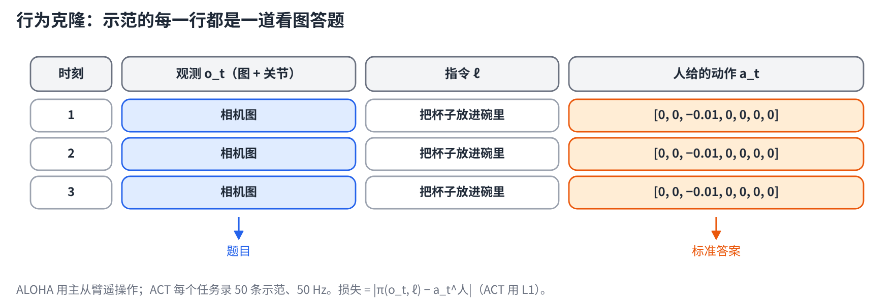
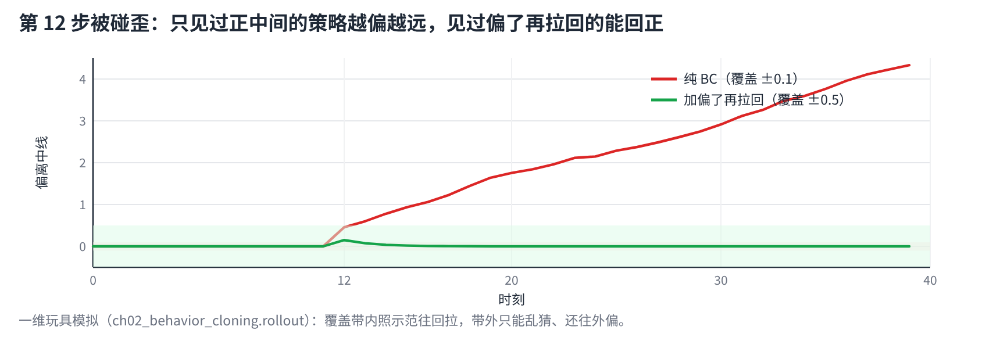
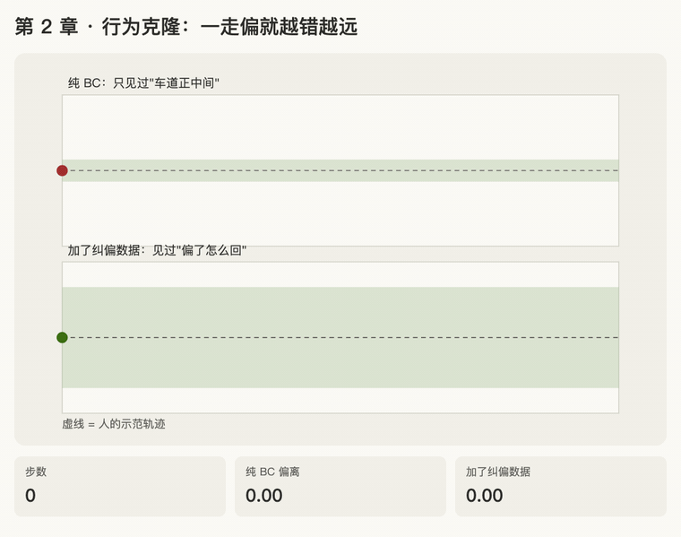

第 2 章 · 行为克隆：照着人类示范抄作业
本地运行
git clone https://github.com/wikieden/vla-from-scratch
cd vla-from-scratch/code/notebooks
pip install jupyterlab torch numpy
jupyter lab ch02_behavior_cloning.ipynb也可以下载后直接用 VS Code 打开 .ipynb 运行。需要 GPU 的章节在 Colab 里选「代码执行程序 → 更改运行时类型 → GPU」。
本章回答：策略 π 是怎么学出来的？训练数据长什么样？为什么"抄错一步会越错越远"？
讲解日期：2026-10-27 · 上一章：第 1 章 策略是什么 · 下一章：第 3 章 动作分块
对应原文：materials/text/papers/act-aloha-2304.13705.txt（50 条示范 L470 附近；L1 损失 L334–L335；复合误差 L72–L74）；CS285 第 2 讲cs285-deep-rl/materials/text/cs285-slides/lec-02.txtL95–L152、L184–L216
本章缩写：BC = Behavior Cloning（行为 / 克隆）；DAgger = Dataset Aggregation（数据集 / 聚合）；ACT = Action Chunking with Transformers；OXE = Open X-Embodiment（开放 / 跨 / 本体）；DROID = Distributed Robot Interaction Dataset（分布式 / 机器人 / 交互 / 数据集）；ALOHA = 低成本开源双臂遥操作硬件。全表见 appendix-glossary.md
讲解
第 1 步：数据从哪来，怎么学
白话类比：学徒看师傅做菜
师傅做一遍菜，学徒在旁边记笔记，每一刻记两样东西：
- 锅里现在什么样（看到的）
- 师傅这一刻手上做了什么（做的）
记了 50 遍以后，学徒自己上手：看到锅里是这个样子，就照笔记做师傅当时那个动作。
这就是行为克隆（Behavior Cloning，BC）：照着人的示范抄作业。
机器人的"笔记"怎么记
人用遥操作控制机器人做一遍任务。比如 ALOHA 用一对主从臂：人扳主臂，机器人的从臂跟着动。系统每个时刻记下一行：
| 时刻 | 观测 \(o_t\)（相机图 + 关节读数） | 指令 \(\ell\) | 人当时给的动作 \(a_t\) |
|---|---|---|---|
| 1 | 🖼️ | "把杯子放进碗里" | [0, 0, -0.01, 0, 0, 0, 0] |
| 2 | 🖼️ | 同上 | [0, 0, -0.01, 0, 0, 0, 0] |
| … | … | … | … |
从开始到做完的一整遍叫一条示范（demonstration，也叫 episode）。ACT 论文里每个任务录了 50 条，控制频率 50 Hz（materials/text/papers/act-aloha-2304.13705.txt 第 470 行附近："We record 50 demonstrations for each task"）。
怎么学
把示范里每一行当成一道"看图答题"：
- 题目：\(o_t\) 和 \(\ell\)
- 标准答案：人给的 \(a_t^{\text{人}}\)
- 模型的答案：\(\pi(o_t, \ell)\)
训练就是让模型的答案尽量接近标准答案。用"差多少"当损失（loss），然后调参数把它压小：
这和教模型认猫狗是同一套方法（监督学习），只是答案从"猫 / 狗"换成了一串动作数字。
- 用绝对值（L1）还是平方（L2）衡量"差多少"都可以。ACT 选了 L1，论文说 L1 让动作更精确（同文件第 334–335 行）。

图 2-1 · 题目是观测和指令，标准答案是人当时给的动作。
场景代码：LeRobot 读示范数据的真实写法（materials/code/lerobot/repo/examples/dataset/load_lerobot_dataset.py L115–L128）。每取一条样本，就是一道"看图答题"：
delta_timestamps = {
camera_key: [-1, -0.5, -0.20, 0], # 题目：当前和之前几帧画面
"observation.state": [-1.5, -1, -0.5, -0.20, -0.10, 0], # 题目：关节读数
"action": [t / dataset.fps for t in range(64)], # 标准答案：人接下来 64 步的动作
}
dataset = LeRobotDataset(repo_id, delta_timestamps=delta_timestamps)
第 2 步：只看录像学，一走偏就越错越远
训练时机器人不动。 BC 只拿录好的示范来学，像学徒关在屋里背笔记，背完才第一次上灶。
白话类比：只看过"车在车道正中间"录像的新手
想象一个新手司机，看过的教学录像全是老司机开的，车永远在车道正中间。上路后：
- 第 1 秒，方向盘稍微多打了一点，车偏了 10 厘米。
- 眼前的画面变成"车靠左一点"。录像里从没出现过这种画面，他不知道该怎么回正，只能瞎猜。
- 瞎猜又错一点，车偏到 30 厘米。画面更陌生，猜得更离谱。
- 最后压线。
每一步只错一点点，但错误会改变下一步看到的画面（第 1 章说的"吐完世界就变了"），而那个画面在训练数据里没见过，于是错上加错。这叫复合误差（compounding error），也叫分布偏移（distribution shift）：训练时见到的是"人走出来的画面"，上场时见到的是"自己走出来的画面"，两者对不上。
原文出处
- ACT 论文 §2："errors from previous timesteps accumulate and cause the robot to drift off of its training distribution"（
materials/text/papers/act-aloha-2304.13705.txt第 72–74 行） - CS285 Lecture 2 "Distributional shift" 一节（
cs285-deep-rl/materials/text/cs285-slides/lec-02.txt第 95–152 行）
怎么治（先认识名字，后面几章展开）
| 办法 | 一句话 | 在哪讲 |
|---|---|---|
| DAgger | 让机器人自己跑，跑偏时人告诉它"这里该怎么做"，把这些纠正加回数据再训练 | CS285 lec-02 第 184–216 行；π*0.6 的"人工纠正"数据就是这个思路（第 12 章） |
| 动作分块（chunk） | 一次规划一整段，需要做决定的次数变少，出错的机会也少 | 第 3 章 |
| 更多、更杂的数据 | 示范里本来就有"偏了再拉回来"的画面 | 阶段 A 的 OXE / DROID |

图 2-2 · 一维玩具模拟：覆盖带外只能乱猜，偏差越滚越大。
动画演示：复合误差：一走偏就越错越远

可交互版：animations/02-compounding-error.html（用浏览器打开，可播放、单步、换随机数重来）。
怎么看：
- 绿色带子 = 示范数据覆盖过的状态，虚线 = 人的示范轨迹。两条路在第 12 步都被"碰歪"一下。
- 上面（纯 BC）带子很窄：被碰出带子后，模型面对的是没见过的画面，动作不靠谱，偏差越滚越大，最后冲出路面。
- 下面（加了"偏了再拉回来"的示范，DAgger / 更杂的数据）带子宽：碰歪后仍在见过的范围里，能拉回中间。对应第 3 题"见过 / 没见过"。
练习与作答记录
题 1：训练时机器人自己动了吗？换句话说，BC 训练是在真机上一边动一边学，还是只拿录好的数据学？这一点会带来什么后果？（大胆猜，第 2 步就讲这个。）
作答（2026-11-04，原话）：边动边学 ✗
点评：答反了。BC 训练时机器人不动，只拿录好的示范学。"边动边学"是强化学习（CS285 后半段）和 DAgger 的做法。正因为只看录像、从没见过自己犯错后的画面，上场后才会越错越远（复合误差）。
题 2（检查理解）：机器人夹杯子时第一步往下多走了 1 厘米，夹爪碰到了杯沿，杯子有点歪。为什么一个纯 BC 训出来的策略，在这之后很可能越做越糟？用"训练时见过 / 没见过"来解释，一两句话就行。
作答（2026-11-04，原话）：因为位置可能稍微偏一点就不行了 ◐
点评：半对。"稍微偏一点就出事"抓到了现象，但还没说出为什么偏一点就不行。完整的链条是三环：
- 没见过：人录示范时每次都夹得很准，录像里从来没有"杯子被碰歪"的画面；
- 乱猜：机器人现在看到的正是这种没见过的画面，不知道该怎么做，只能凭相似的画面瞎猜；
- 更偏：瞎猜的动作又有误差，杯子更歪，画面更陌生，接着猜得更差。
关键词是"没见过"：问题不在"偏"本身，而在偏了以后进到了训练数据里没有的情况。
题 3（确认）：假如录示范时人故意让机器人偶尔碰歪杯子再扶正，训出来的策略再碰到"杯子歪了"会更好还是更差？为什么？
作答（2026-11-04，原话）：好，因为机器人在训练数据里见过这个情况 ✓
点评：对，抓住了"见过 / 没见过"这个关键。这正是 DAgger 和"更杂的数据"两种治法共同的道理：把"跑偏后怎么救"放进训练数据。
口诀
人做一遍记一遍，看图答题对答案；
只学人走的路，一走偏就是没见过的路，越猜越偏。
本章复习卡片
V03 BC 训练时机器人动不动、V04 复合误差的三环、V17 多录正中间示范救不了（见 review.md）
附录 · 延伸阅读
留给以后深入学习用，不影响本章主线。★ 是建议先读的。
推荐阅读
| 读什么 | 读哪里 | 读它为了什么 |
|---|---|---|
| ★ ACT（Zhao 等，2023） | act-aloha-2304.13705.txt L72–L74、L334–L335 |
复合误差、L1 损失 |
| ★ CS285 第 2 讲 | cs285-deep-rl/materials/text/cs285-slides/lec-02.txt L95–L216 |
分布偏移、DAgger |
| DROID / Open X-Embodiment | droid-2403.12945.txt、open-x-embodiment-2310.08864.txt |
更多、更杂的数据（第 16 章） |
| 《从零学强化学习》第 1 章 | 智能体与环境 | 为什么"动作改变下一个观测" |
数学原理
- 监督学习：给题目和标准答案，调参数让模型答案接近标准答案。
- L1 / L2 损失：|差| 或 差²；L1 对个别大误差不那么敏感。
- 分布偏移：训练时见到的状态分布和上场时不同，误差会累积。
公式清单
| 公式 | 意思 |
|---|---|
| \(\text{loss} = \lvert \pi(o_t, \ell) - a_t^{\text{人}} \rvert\) | 行为克隆的 L1 损失 |
代码对照：把本章的数字用代码算一遍
纯 Python + NumPy，不需要 GPU。代码在仓库本地
vla-deep-dive/solutions/chapter-code/ch02_behavior_cloning.py，配套测试tests/test_ch02.py：
bash cd vla-deep-dive/solutions/chapter-code uv run python ch02_behavior_cloning.py uv run pytest tests/test_ch02.py
讲义 ↔ 代码：
| 讲义 | 写法 | 跑出来 |
|---|---|---|
| 第 1 步 | l1_loss(pred, target) |
7 维里只有一维差 0.01：L1 = 0.0014 |
| 第 2 步 | rollout(coverage) |
覆盖 ±0.1：最后偏 4.33；覆盖 ±0.5：回到 0.00 |
代码里才看得到的 2 件事：
l1_loss对 7 维取平均，所以一维差 0.01 只算 0.01 / 7。rollout的"没见过就乱猜"用固定往外偏 0.15 + 噪声模拟，是示意，不是真实策略。
自己改一改（不影响练习答案）：
- 把
bump从 0.3 改成 0.05，看纯 BC 还会不会冲出去。 - 把覆盖宽度从 0.1 慢慢加到 0.5，找出刚好能拉回的那个值。